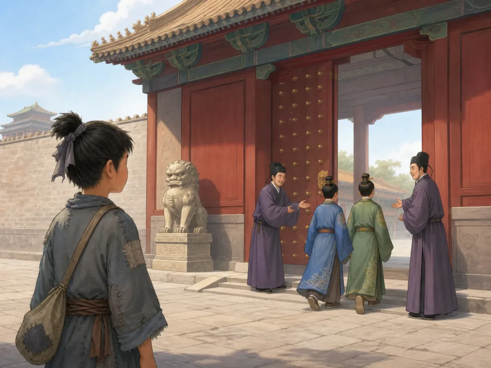
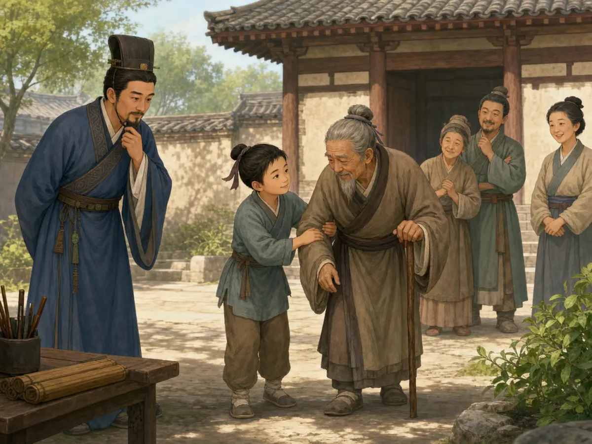
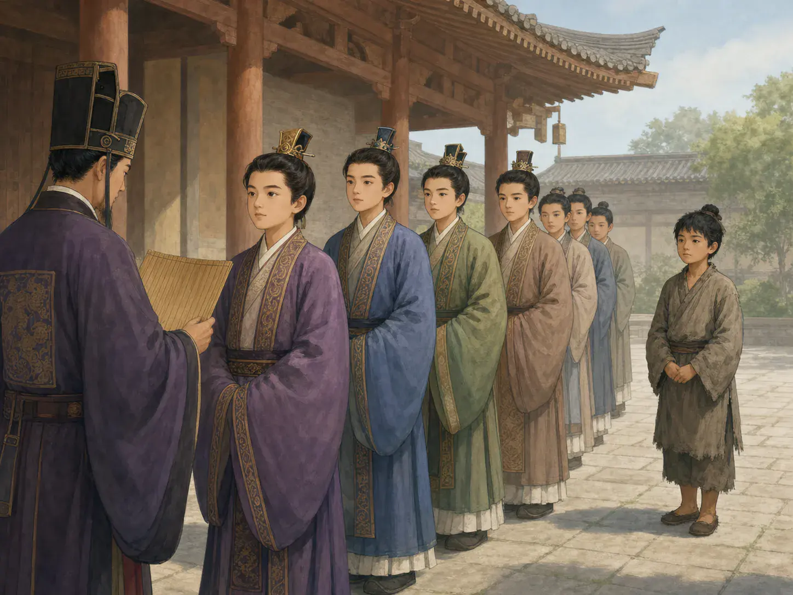
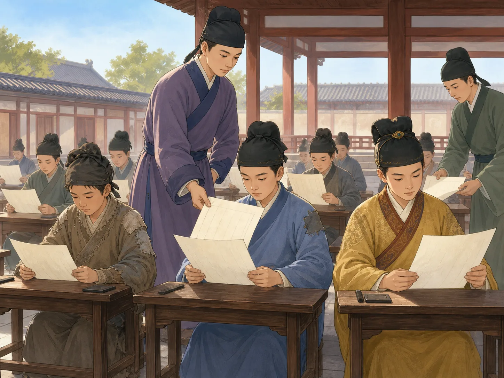

谁能走进当官的大门？
Who Could Walk Through the Government Door?
Page 1
第一把钥匙是家世
The First Key Was Family

This gate is a modern symbol, not a scene from one exact dynasty.
古代城市需要有人管理粮食、记录法律和传达命令。应该选谁来做这些工作？
很早的时候，出生在贵族家庭常常让一个人离权力更近。有些职位会留在有势力的家族里。君主也会任命会写字、懂法律、能办事的人。
对大多数农民和手工业者来说，读书和接近掌权者都很难。门上不只一把锁：家世、教育和关系都会影响机会。
An ancient city needed people to manage grain, record laws, and carry out orders. How should it choose them?
In early times, being born into a noble family often placed a person closer to power. Some duties stayed inside powerful families. Kings and other leaders also chose people who could write, understand laws, and get work done.
For most farmers and craftspeople, education and powerful connections were hard to reach. The government door had more than one lock: family, learning, and relationships all mattered.
Page 2
汉代：先要有人推荐你
Han Times: Someone Had to Recommend You

This picture helps explain local observation. One kind act did not earn a government job.
汉代需要很多官员。地方官会观察辖区里的人，再把合适的人推荐给中央政府。有一类推荐重视孝顺父母和做事清廉。
这不是人人都能报名的考试。一个人先要被地方官和有影响的人看见。如果推荐者偏爱朋友，真正有能力的人可能没有机会。
图里帮助老人的孩子不会因为一件好事马上当官。声誉、提名和后面的考查都很重要。
The A powerful time in China more than 2,000 years ago. needed many officials. Local leaders watched men in their areas and recommended some to the central government. One famous category looked for men known for caring for parents and acting honestly.
This was not a test that anyone could enter. A person first had to be noticed by officials and influential neighbors. If a recommender favored friends, a capable person might be missed.
The helpful child in the picture would not receive a job for one good deed. Reputation, nomination, and later checking all mattered.
Page 3
给人打分，也给家庭打分
A Score for the Person - and the Family

This modern concept picture shows how powerful families could move toward the front.
汉朝末年战乱以后，魏国开始用一种分成九等的办法评价读书人。评选官调查一个人的能力和品行，再把等级交给政府。
开始时，这个办法想让选人更有秩序。可是评选官常来自有势力的家族。时间一久，候选人的家族名声越来越影响分数。
问题又回来了：谁能被看见？又由谁来评分？
After wars broke old communities apart, the state of Wei began using a nine-rank system. Officials investigated educated men, rated their character and ability, and sent the grades to the government.
The system began as a way to organize selection. Yet the judges often came from powerful families. Over time, a candidate's family name had more and more influence on his score.
The old questions returned: Who gets noticed, and who has the power to judge?
Page 4
考卷打开了一条新路
An Exam Opened Another Road

This picture represents comparing written answers. It does not prove that Tang testing was perfectly fair.
隋唐时期，考试慢慢变成选官的重要道路。更多男子可以通过学校或地方推荐参加，用答卷和别人竞争。
可是，“可以参加”不等于“机会一样”。准备考试需要书、老师、很多年时间和旅行的钱。名声和有权势者的推荐也会影响结果。考试也不是唯一的当官道路。
到了宋代，考试规模更大，还用盖住姓名、重新抄卷等办法减少作弊。办法变得更有规则，家庭优势却没有消失。
During the A short dynasty about 1,400 years ago that helped start the imperial exam system. and A powerful and creative time in China about 1,300 years ago. periods, written exams gradually became an important road into government. More men could enter through schools or local nomination and compete through their answers.
But “allowed to enter” did not mean “equally able to enter.” Preparation required books, teachers, years of time, and money for travel. Reputation and recommendations still mattered, and exams were not the only path to office.
Under the A time in China about 1,000 years ago., the exams grew larger. Names were hidden and papers were copied to make favoritism harder. The rules became more orderly, but family advantage did not disappear.
同一张纸，不是同一个起点
The Same Paper Is Not the Same Starting Line
明清时期，考试形成更整齐的阶梯。1905年，清政府停止科举，开始发展新式学校。
两千多年里，政府把家世、推荐、学习和考试用不同方法放在一起。考试让更多人有机会，却没有消除钱、性别、地区和家庭资源的影响。
真正的问题不只是“要不要考试”，还包括：谁能走进考场？考什么？谁来评分？谁最后得到工作？
By the Ming and Qing periods, the exams formed a more regular ladder. In 1905, the Qing government ended the system while building new schools.
For more than two thousand years, governments combined family, recommendation, education, and exams in different ways. Testing widened opportunity, but it never erased the effects of money, gender, region, and family resources.
The question is not only “Should there be a test?” It is also: Who can reach it? What does it measure? Who judges? Who receives the job?
从家世到考卷：古代怎样选官？
From Family Names to Exam Papers
Page 1
家世让一些人离门更近
Some Families Stood Closer to the Door
This is a modern symbol. Family status mattered, but appointment and other paths existed too.
一座城市需要管理粮仓、记录法律和传达命令的人。应该看他出生在哪个家族，听谁推荐，还是请他答题？中国古代政府两千多年里不断组合这些办法。
早期没有一套永远不变的选官制度。贵族身份和家族关系常让人靠近权力，有些职责也留在同一家族。君主同时会任命官员；战国和秦的政府越来越复杂，也需要会写字、懂法律、能办事的人。
不是每个贵族孩子都会自动当官，也不是别人绝对没有机会。不过，对大多数农民和手工业者来说，教育和权力都很难接近。家世、教育和关系像门上的几把锁。
A city needs people to manage grain, record laws, and carry out orders. Should it choose them by family, recommendation, or a written answer? For more than two thousand years, Chinese governments kept combining these methods in new ways.
Early China had no single system that stayed unchanged. Noble birth and family ties often placed someone near power, and some duties remained in the same families. Kings and other leaders also chose officials. As governments grew more complex in the Warring States and Qin periods, they needed people who could write, understand laws, and handle practical work.
Not every noble child automatically received an office, and nobody else was completely barred. Still, most farmers and craftspeople had little access to education and almost no chance to meet the people in power. Family, schooling, and connections were several locks on the same door.
Page 2
汉代推荐：先被看见
Han Recommendation: First Be Seen
This is a modern imagined scene. One kind deed did not automatically earn an office.
汉代大帝国需要不断寻找官员。“察举”让地方官考察人才，再推荐给中央。著名的“孝廉”重视孝行和清廉，有些被推荐者还要到中央接受考问。学校和从低级职务升迁也是其他入口。
这和只按家世分配不同，却不是人人报名的统一考试。候选人先要进入地方官和有影响人物的视线。学问、声誉和关系都会影响机会，推荐者偏爱熟人也会制造问题。
所以，图里的官员不会看见孩子扶老人就马上给他工作。长期声誉、正式提名和后续考查才组成选择过程。
The great Han empire needed a steady supply of officials. Under chaju, local officials observed men in their districts and nominated some to the central government. A famous category, xiaolian, looked for men known for caring for parents and acting honestly. Some nominees then faced questions or examinations at the capital. Schools and promotion from lower jobs offered other routes.
This differed from choosing only by birth, but it was not an open test. Candidates first had to be noticed by officials and influential neighbors. Learning, reputation, and relationships all mattered. A recommender who favored friends could leave a capable person unseen.
The official in the picture would not offer a job after witnessing one helpful act. Selection depended on longer reputation, nomination, and further evaluation.
Page 3
九品评分：谁来评价？
Nine Ranks: Who Gets to Judge?
This modern concept picture uses a line to show family reputation affecting rank.
汉末战乱和人口流动破坏了旧有评价网络。三国时的魏采用后来称为“九品中正制”的办法。中正调查本地士人，评定等级，交给政府作为起点职位的参考。
这个制度开始时想让人才管理更有秩序，不只是一个挡住穷人的计划。可是中正常来自有势力的家族，时间一久，候选人的家族声望越来越影响等级。
汉代推荐也会受地方势力影响，九品评分也会考虑能力品行。两套办法共同留下一个难题：谁有资格被看见，谁有权评价？
War and migration at the end of the Han damaged older networks for judging people. The state of Wei adopted what became known as the nine-rank system. Local “rectifiers” investigated educated men, assigned grades, and sent those ratings to the government to help set starting positions.
The system began as an effort to organize recruitment after disorder, not simply as a plan to block poor men. Yet rectifiers often belonged to powerful clans. Over time, family reputation weighed more heavily in the grades.
Han recommendation could also bend toward local power, and nine-rank judges formally considered character and ability. Both systems leave the same hard question: who deserves to be seen, and who gets to judge?
Page 4
隋唐考试：一条新路
Sui and Tang Exams: A New Road
This represents comparing papers. It does not prove anonymous, equal Tang testing.
科举不是隋朝某天突然发明的一张考卷。汉代已有推荐后考试，后来政府继续调整。隋代承接这些办法，参加者仍需推荐；唐代考试种类和安排才慢慢稳定，更多男子原则上可以通过学校或地方送考参加。
原则上能参加，不等于机会相同。多年读书需要书、老师、时间和旅费。唐代考生的名声、考前文章和名人推荐也会影响结果。通过考试还不一定马上得到职位，门荫、学校和军功也提供其他道路。
答卷比较成为越来越重要的新想法，却没有让家世和关系消失。
The imperial examinations did not appear as a complete new test on one day in the Sui. Han governments had already examined nominated men, and later states kept adjusting recruitment. Sui practices grew from those earlier methods, while candidates still needed nomination. Tang categories and schedules became more regular, and more men could enter through schools or local nomination.
Permission in principle did not create equal access. Years of study required books, teachers, time, and travel money. Tang reputation, writing circulated before an exam, and introductions from famous people could affect success. Passing did not always bring an immediate office, and family privilege, schools, and military service remained other routes.
Comparing written work became a more important idea, but it did not erase family and connections.
Page 5
宋代以后：让考卷说话
After the Song: Let the Paper Speak
宋代科举规模扩大，更多官员拥有进士出身。为了减少考官认人，考试逐渐盖住姓名、给卷子编号、让书吏重抄答案。殿试也影响最终排名。
这些保护办法不能消除家庭优势。官员亲属仍有其他资格道路，能供孩子多年读书和反复赶考的家庭也更有优势。规则主要面向男性，还有身份和地区限制。公平不只发生在考场里，能不能走到考场也是问题。
明清形成更严密的考试阶梯。成功带来地位，失败可能消耗多年和家庭资源。1905年，清政府在教育改革中停止科举，发展新式学校。
The Song examinations grew larger, and more officials held the jinshi degree. To make favoritism harder, exam offices hid names, replaced them with numbers, and had clerks recopy answers so handwriting could not be recognized. A palace examination helped set final ranks.
Safeguards did not erase family advantage. Officials' relatives still had other routes, and families able to support years of study and repeated travel stood in a stronger position. The formal path was mainly male and carried status and regional limits. Fairness did not begin inside the exam hall; being able to reach it mattered too.
The Ming and Qing built a more regular examination ladder. Success brought status, while failure could consume years and family resources. In 1905, the Qing government ended the exams as part of wider educational reform.
门变了，问题还在
The Door Changed; the Questions Remained
这不是“家世、推荐、分数，所以越来越公平”的直线故事。每个时代都把家世、声誉、知识、考试和权力重新组合。
科举扩大了竞争范围，也改变了最受重视的知识，却没有消除财富、性别、地区和家庭资源的影响。
同一张考卷让比较更有规则，却不自动给人同一个起点。我们还要问：谁能参加？考什么？谁评分？谁最后得到职位？
This is not a straight line from family to recommendation to scores, with the world becoming fairer at every step. Each period recombined family, reputation, knowledge, exams, and power.
The examinations widened competition and changed which learning brought honor. They never removed the influence of wealth, gender, region, and family resources.
The same paper can make comparison more orderly. It cannot create the same starting point. We still have to ask who may enter, what is tested, who judges, and who finally receives a job.
一张考卷能打开多大的门？ - 中国古代怎样选官
How Far Could an Exam Open the Door? Choosing Officials in Imperial China
Page 1
第一把锁：家世
The First Lock: Family Background
This modern palace gate is symbolic, not a scene from one exact dynasty. Family status mattered, but appointment and other routes existed too.
假如一座城要选管理粮仓、记录法律和传达命令的人，应该先看什么？是看他出生在哪个家族，听谁推荐，还是请他坐下来答题？中国古代用了两千多年，反复试过这些办法。
早期中国并没有一套从头到尾不变的“选官制度”。在西周等时代，贵族身份和家族关系常常决定一个人离权力有多近，重要职位也可能由同一家族世代担任。不过，君主也会任命官员；到了战国和秦，国家的官僚组织越来越复杂，更需要会书写、懂法律、能办事的人。把那时说成“贵族的孩子自动当官，其他人完全没有机会”，太简单了；但对大多数农民和手工业者来说，得到教育、接近掌权者，确实极难。
所以，第一幅图里的宫门更像一个比喻，不是某个朝代真实发生的一幕。门外的孩子面对的，不只是一扇门，还有家世、教育和关系织成的好几把锁。
Suppose a city needs people to manage its grain, record its laws, and carry out orders. What should matter most when choosing them: the family they were born into, the people who recommend them, or the answers they write on a test? For more than two thousand years, Chinese governments kept trying different combinations of all three.
Early China did not have one unchanging system for choosing officials. In eras such as the Western Zhou, noble birth and family ties often placed a person close to power, and some important duties stayed within the same families. Rulers appointed officials as well, and by the Warring States and Qin periods, growing governments needed people who could write, understand laws, and handle practical work. It would be too simple to say that every noble child automatically received an office while nobody else had a chance. Still, for most farmers and craftspeople, getting an education or attracting a ruler's attention was extremely difficult.
The palace gate in the first picture is therefore a symbol, not a scene from one exact dynasty. The child outside faces more than one locked door. Family status, education, and connections all stand between him and a government post.
Page 2
汉代察举：先要被人看见
Han Recommendations: First, Someone Had to Notice You
This image only illustrates local observation. One kind act did not earn an office; reputation, nomination, and evaluation all mattered.
汉代建立庞大的帝国后，需要不断寻找官员。朝廷使用“察举”等途径，让地方官在辖区内考察人才，再把合适的人推荐给中央。“孝廉”是其中著名的一科，重视对父母的孝行和做官应有的清廉；有些被推荐者还要到中央接受考问。太学等学校和属吏升迁，也提供了另外的入口。
这和只按家世分配职位并不一样，却也不是今天人人报名的统一考试。一个人得先进入地方官和乡里名流的视线，才可能被提名。学问和声誉有用，人际关系和地方评价也很重要；推荐者若判断错误、偏爱熟人，制度就会出问题。
因此，第二幅图可以帮助我们想象“地方考察”，却不能当作察举现场的照片。地方官不会只看见一个孩子扶老人，便立刻让他当官。真正的过程牵涉长期声誉、官员提名和后续考核。
After the Han built a large empire, the government needed a steady supply of officials. One important method was chaju, in which local officials observed men in their districts and nominated promising candidates to the central government. A famous category called xiaolian looked especially for men known as filial and incorrupt - respectful toward parents and honest enough for public service. Some nominees were then questioned or examined at the capital. Imperial schools and promotion from lower government work created other paths as well.
This was different from simply handing offices down by birth, but it was not an open test that anyone could sign up for. A candidate first had to enter the view of officials and influential people in his community. Learning and reputation mattered, but so did local relationships. If a recommender favored friends or judged badly, a capable person might never be nominated.
The second picture can help us imagine local observation, but it is not a snapshot of chaju at work. An official did not see a child help an older neighbor and immediately give him a government job. Selection involved a longer reputation, an official nomination, and often another stage of evaluation.
Page 3
九品中正：给人评分，也给家门评分
Nine Ranks: Rating a Person - and His Family
This modern illustration turns a complex system into a line to show how family status shaped rankings. It is not a record of an actual selection.
汉末战乱使人口流动，地方社会和旧有评价网络受到破坏。三国时的魏开始实行后来被称为“九品中正制”的办法：由“中正”调查本地士人，把他们分成不同等级，再把评价交给官府，作为安排起点职位的依据。它刚出现时，是想让中央更有秩序地掌握人才，并不只是一个“故意挡住穷人”的计划。
可是，中正常从有势力的地方家族中产生。时间一久，候选人的家族声望越来越影响评分，高门大族更容易取得好的起点。这里不能简单地说“汉代公平了，魏晋又退回去了”：汉代举荐同样可能被地方势力左右，而九品中正也会评价能力和品行。真正值得注意的是，两套制度都把一个难题交给少数评选者 - 谁有资格被看见，又由谁来评价他？
第三幅图把复杂制度画成一条队伍，只能表达“门第影响排序”这个概念。它不是魏晋官员实际在街上给孩子排队打分的记录。
War and migration at the end of the Han disrupted communities and their old ways of judging people. During the Three Kingdoms period, the state of Wei introduced what became known as the nine-rank system. Officials called “rectifiers” investigated educated men from their home regions, placed them in ranked categories, and sent those ratings to the government. The grades helped determine where a new official could begin his career. At first, the system was an attempt to organize recruitment after years of disorder, not simply a plot designed to block poor people.
Yet rectifiers often came from powerful local clans. Over time, a candidate's family reputation weighed more heavily, and members of great families were more likely to receive high ratings and good starting positions. This does not give us a neat story in which Han recommendations were fair and the Wei and Jin suddenly moved backward. Han recommenders could also be influenced by local power, while nine-rank officials did consider character and ability. Both systems left a hard question in the hands of a small group: who deserved to be noticed, and who had the authority to judge?
The third picture turns this complicated process into a line of people. It illustrates the idea that family status could shape a ranking; it is not a record of officials lining up children and scoring them in a street.
Page 4
隋唐科举：新路出现了，却不是唯一的路
Sui and Tang Exams: A New Road, Not the Only Road
This is a concept image about comparing written work, not evidence of an anonymous, equal Tang exam. Education, nomination, and connections still mattered.
科举并不是隋朝某一天突然出现的一张新考卷。汉代已有“被推荐后考试”的做法，南北朝也不断调整选官。隋朝的诏令和考试承接了这些旧制度，参加者仍需官员举荐；到了唐代，考试的种类、时间和组织方式才逐渐稳定，更多男子原则上可以通过学校或地方送考进入竞争。
“原则上可以参加”不等于“每个人都有同样机会”。准备考试需要多年读书，还要有书、老师、时间和路费。唐代考生的名声、文章在考前的传播，以及官员和名士的推荐，也可能影响结果。通过礼部考试通常还不等于立刻得到官职，考生可能仍要等待或接受其他选拔；与此同时，门荫、学校、军功和地方幕府也是进入仕途的道路。
所以，第四幅图不是“唐代穷孩子和官员之子匿名同场、公平竞争”的历史证据。它只能代表一个渐渐变得重要的新想法：家世之外，朝廷也用可以比较的答卷来选择一部分人。
The imperial examination system did not suddenly appear with a brand-new test paper on one day in the Sui dynasty. Han officials had already examined nominated candidates, and later governments kept changing recruitment practices. Sui orders and examinations grew out of those older methods, and candidates still needed official nomination. During the Tang, exam categories and schedules became more regular, and more men could, in principle, enter the competition through government schools or nomination from their home areas.
“Allowed in principle” did not mean “equally able to compete.” Preparing required years of education, along with books, teachers, time, and money for travel. In the Tang, a candidate's reputation, writing circulated before the test, and introductions from officials or famous scholars could also affect his chances. Passing the examination administered by the Ministry of Rites did not always bring an immediate post; another selection or a long wait might follow. Hereditary privilege, government schools, military service, and jobs on regional staffs continued to offer other routes into government.
The fourth picture is therefore not evidence that a poor Tang student and an official's son took an anonymous, perfectly equal test. It represents a new idea that was becoming increasingly important: alongside family background, the court could compare at least some candidates through written work.
Page 5
宋代以后：让卷子说话，也别忘了台阶
After the Song: Let the Paper Speak - but Notice the Stairs
到了宋代，科举规模扩大，进士出身的官员比唐代更多，一些没有显赫做官记录的家族也由此进入官僚队伍。为了减少考官认人的机会，宋代逐步使用封住姓名、给考卷编号和由书吏重抄答卷等办法。殿试把最终排名放到皇帝主持的考试中，考试也越来越成为读书人生活的中心。
不过，考试扩大并没有让家族优势消失。宋代官员亲属仍可通过“荫补”取得入仕资格；能长期供一个孩子读书、反复赶考的家庭，也比缺少书本和时间的家庭更有优势。正式规则主要面向男性，还有身份限制和地区名额。公平不只在考场里发生：一个人能不能走到考场，也是公平的一部分。
明清时期，地方、乡试、会试和殿试组成更严密的阶梯，名额制度让不同地区都有一定位置，也让竞争变得非常激烈。考试围绕儒家经典和规定文体展开，“八股文”并非只把句子背下来就能写，但格式严格，考生必须在有限框架内展示经义、结构和文字能力。考中可以带来地位与机会，失败者却可能多年投入而仍停在门外；地方精英也能凭学校、书籍和家族资源保持优势。
The examinations grew much larger under the Song. More officials held the prestigious jinshi degree than in the Tang, and some came from families with little or no recent record of government service. To make favoritism harder, Song exam offices gradually sealed candidates' names, replaced names with numbers, and had clerks copy papers so examiners could not recognize the handwriting. A palace examination shaped the final ranking, and the testing system moved closer to the center of educated men's lives.
Expansion did not erase family advantage. Song officials could still use hereditary “protection privilege” to help relatives qualify for service. A household able to support years of study and repeated journeys to examinations had an advantage over one that needed every child to work. The formal route was mainly for males, and rules about status and regional quotas also shaped eligibility. Fairness did not begin inside the examination hall; being able to reach the hall was part of the question too.
During the Ming and Qing, local qualifying tests, provincial exams, metropolitan exams, and the palace exam formed a more tightly organized ladder. Quotas reserved places for different areas, but competition was fierce. Candidates studied Confucian classics and wrote in required forms. The famous “eight-legged essay” was not produced by memorization alone, but its strict structure forced writers to display knowledge and skill within narrow boundaries. Success could bring status and opportunity, while years of failure could consume a family's resources. Local elites still held advantages through schools, books, money, and educated relatives.
Page 6
1905年以后：门换了，问题还在
After 1905: A New Door, the Same Questions
十九世纪末，中国面对战争、外交压力和新知识体系，越来越多人认为旧考试不能培养国家急需的人才。清政府在教育改革中于1905年停止科举，转而发展新式学校。延续许多世纪的制度结束了，但“怎样选人才才公正”并没有成为一道已经答完的题。
现在再看那四幅门和考卷的图，我们不必讲一个“家世 - 推荐 - 分数，世界越来越公平”的直线故事。更准确的说法是：历代不断把家世、声誉、知识、考试和皇权组合起来；科举扩大了竞争范围，也改变了什么知识最受重视，却从未消除财富、性别、地区、关系和家庭资源的影响。
By the late nineteenth century, China faced wars, foreign pressure, and new fields of knowledge. More reformers argued that the old examinations did not train the experts the country now needed. In 1905, as part of a broader education reform, the Qing government ended the civil service examinations and turned toward a new school system. A centuries-old institution stopped, but the question of how to choose people fairly did not.
Looking back at the four pictures, we no longer need a straight-line tale that says, “First family, then recommendation, then scores - and everything became fairer.” A more accurate story is that different dynasties combined family status, reputation, education, tests, and imperial power in changing ways. The examinations widened competition and changed which kinds of learning brought honor, but they never removed the effects of wealth, gender, region, personal networks, or family resources.
同一张纸，不等于同一个起点
The Same Paper Is Not the Same Starting Point
一张相同的考卷，可以让比较更有规则，却不自动带来相同的起点。真正难的问题不是“要不要考试”，而是：谁能走进考场？考什么？谁来评分？考中以后，又由谁得到职位？
Giving candidates the same paper can make comparison more orderly. It does not automatically give them the same starting point. The deepest questions are not only “Should there be a test?” They are also: Who can reach it? What does it measure? Who judges it? And after the scores are counted, who actually receives a job?